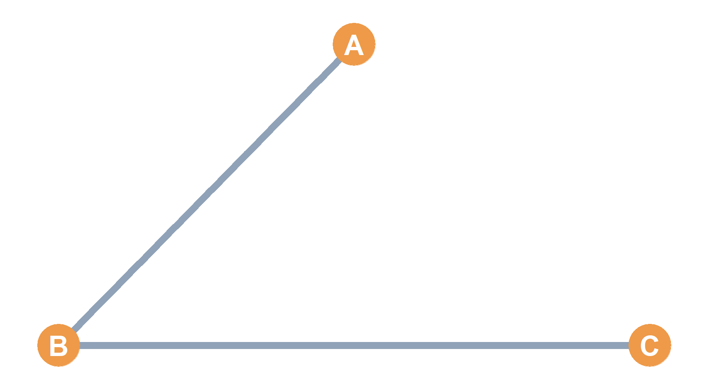

| A | B | C | |
|---|---|---|---|
| A | 0 | 1 | 0 |
| B | 1 | 0 | 1 |
| C | 0 | 1 | 0 |
Matrix Algebra in Social Networks
Basic Operations, Conformability, and Matrix Multiplication
Part 1: Basic Operations & Network Overlap
Combining Social Relations
- In social network analysis, we often record multiple types of relationships for the same set of nodes (e.g., Hanging Out vs. Co-working).
- How do we combine, subtract, or intersect these overlapping structures?
- We use Basic Matrix Operations performed cell-by-cell on adjacency matrices of the same dimensions:
- Matrix Addition (\(\mathbf{H} + \mathbf{C}\)): Measures overall relationship volume.
- Matrix Subtraction (\(|\mathbf{H} - \mathbf{C}|\)): Isolates relational disagreements.
- Hadamard Product (\(\mathbf{H} \circ \mathbf{C}\)): Extracts multiplex overlap.
Adjacency Matrices: \(\mathbf{H}\) and \(\mathbf{C}\)
Hanging Out (\(\mathbf{H}\))

Co-working (\(\mathbf{C}\))
| A | B | C | |
|---|---|---|---|
| A | 0 | 0 | 1 |
| B | 0 | 0 | 1 |
| C | 1 | 1 | 0 |

Step-by-Step Addition (\(\mathbf{H} + \mathbf{C}\))
- Addition (\(s_{ij} = h_{ij} + c_{ij}\)) adds corresponding cells:
\[\mathbf{H} + \mathbf{C} = \begin{pmatrix} 0 & 1 & 0 \\ 1 & 0 & 1 \\ 0 & 1 & 0 \end{pmatrix} + \begin{pmatrix} 0 & 0 & 1 \\ 0 & 0 & 1 \\ 1 & 1 & 0 \end{pmatrix}\]
\[\mathbf{H} + \mathbf{C} = \begin{pmatrix} 0+0 & 1+0 & 0+1 \\ 1+0 & 0+0 & 1+1 \\ 0+1 & 1+1 & 0+0 \end{pmatrix} = \begin{pmatrix} 0 & 1 & 1 \\ 1 & 0 & \mathbf{2} \\ 1 & \mathbf{2} & 0 \end{pmatrix}\]
- Interpretation:
- Value 2 represents a multiplex tie (both hang out and work together).
- Value 1 represents a uniplex tie (either hang out or work together, but not both).
Visualizing Matrix Addition (\(\mathbf{H} + \mathbf{C}\))
Resulting Sum Matrix
| A | B | C | |
|---|---|---|---|
| A | 0 | 1 | 1 |
| B | 1 | 0 | 2 |
| C | 1 | 2 | 0 |
- Red/Blue = Uniplex bonds.
- Purple = Multiplex bonds.

Step-by-Step Subtraction (\(|\mathbf{H} - \mathbf{C}|\))
- Absolute Subtraction (\(d_{ij} = |h_{ij} - c_{ij}|\)) isolates relational disagreement:
\[|\mathbf{H} - \mathbf{C}| = \left| \begin{pmatrix} 0 & 1 & 0 \\ 1 & 0 & 1 \\ 0 & 1 & 0 \end{pmatrix} - \begin{pmatrix} 0 & 0 & 1 \\ 0 & 0 & 1 \\ 1 & 1 & 0 \end{pmatrix} \right|\]
\[|\mathbf{H} - \mathbf{C}| = \begin{pmatrix} |0-0| & |1-0| & |0-1| \\ |1-0| & |0-0| & |1-1| \\ |0-1| & |1-1| & |0-0| \end{pmatrix} = \begin{pmatrix} 0 & 1 & 1 \\ 1 & 0 & \mathbf{0} \\ 1 & \mathbf{0} & 0 \end{pmatrix}\]
- Symmetric Difference:
- Value 1 = Connected by exactly one relationship.
- Value 0 = Connected by both (multiplex ties cancel out) or neither.
Visualizing Subtraction (\(|\mathbf{H} - \mathbf{C}|\))
Uniplex-Only Matrix
| A | B | C | |
|---|---|---|---|
| A | 0 | 1 | 1 |
| B | 1 | 0 | 0 |
| C | 1 | 0 | 0 |
- Multiplex tie between B and C is erased.
- Only uniplex green edges remain.

Step-by-Step Hadamard Product (\(\mathbf{H} \circ \mathbf{C}\))
- Hadamard / Dot Product (\(p_{ij} = h_{ij} \times c_{ij}\)) represents relational intersection:
\[\mathbf{H} \circ \mathbf{C} = \begin{pmatrix} 0 & 1 & 0 \\ 1 & 0 & 1 \\ 0 & 1 & 0 \end{pmatrix} \circ \begin{pmatrix} 0 & 0 & 1 \\ 0 & 0 & 1 \\ 1 & 1 & 0 \end{pmatrix}\]
\[\mathbf{H} \circ \mathbf{C} = \begin{pmatrix} 0 \times 0 & 1 \times 0 & 0 \times 1 \\ 1 \times 0 & 0 \times 0 & 1 \times 1 \\ 0 \times 1 & 1 \times 1 & 0 \times 0 \end{pmatrix} = \begin{pmatrix} 0 & 0 & 0 \\ 0 & 0 & \mathbf{1} \\ 0 & \mathbf{1} & 0 \end{pmatrix}\]
- Sociological Meaning:
- Value 1 only if both \(h_{ij} = 1\) and \(c_{ij} = 1\) (\(1 \times 1 = 1\)).
- Overlap is extracted; all uniplex ties are erased.
Visualizing the Hadamard Product (\(\mathbf{H} \circ \mathbf{C}\))
Multiplex-Only Adjacency Matrix
| A | B | C | |
|---|---|---|---|
| A | 0 | 0 | 0 |
| B | 0 | 0 | 1 |
| C | 0 | 1 | 0 |
- Retains only the shared co-working & hangout tie.
- Network density drops, leaving only the purple edge.

Part 2: Conformability Rules
Standard Matrix Multiplication (\(\mathbf{A} \times \mathbf{B}\))
- Unlike the element-wise Hadamard product, standard matrix multiplication is non-elementary.
- It involves multiplying the rows of the left matrix by the columns of the right matrix.
- Because rows and columns are matched, the sizes of the two multiplier matrices must follow a strict structural rule.
- This rule is called Conformability.
The Conformability Rule
- You can only multiply two matrices if the number of columns of the first matrix equals the number of rows of the second matrix.
- Put their dimensions side-by-side:
\[\mathbf{A}_{3 \times \mathbf{5}} \times \mathbf{B}_{\mathbf{5} \times 6}\]
- Inner Dimensions: The bold “fives” are the inner dimensions. They must be identical for the multiplication to be defined (conformable).
- Outer Dimensions: The “three” and “six” are the outer dimensions. They dictate the size of the resulting product matrix:
\[\mathbf{A}_{3 \times \mathbf{5}} \times \mathbf{B}_{\mathbf{5} \times 6} = \mathbf{C}_{3 \times 6}\]
Conformable vs. Non-Conformable
Conformable Example
- Line up dimensions: \[\mathbf{A}_{4 \times \mathbf{2}} \times \mathbf{B}_{\mathbf{2} \times 3}\]
- Inner dimensions match (2 = 2).
- The multiplication is fully defined.
- Product Matrix size: \[\mathbf{C}_{4 \times 3}\]
Non-Conformable Example
- Line up dimensions: \[\mathbf{A}_{3 \times \mathbf{4}} \times \mathbf{B}_{\mathbf{2} \times 3}\]
- Inner dimensions clash (4 \(\neq\) 2).
- This operation is mathematically impossible.
- The Visual Reason: When you try to dot-multiply a row of 4 by a column of 2, you “run out of numbers” on the right, making the sum undefined.
Matrix Multiplication is Non-Commutative
- In scalar math, order doesn’t matter: \(4 \times 3 = 3 \times 4\).
- In matrix algebra, order completely changes the structure:
\[\mathbf{A}_{2 \times \mathbf{3}} \times \mathbf{B}_{\mathbf{3} \times 2} = \mathbf{C}_{2 \times 2} \quad \text{(Square 2x2 Matrix)}\]
\[\mathbf{B}_{3 \times \mathbf{2}} \times \mathbf{A}_{\mathbf{2} \times 3} = \mathbf{D}_{3 \times 3} \quad \text{(Square 3x3 Matrix)}\]
- Changing the multiplication order changes both the conformability checks and the resulting network’s dimensions!
Part 3: Step-by-Step Multiplication Mechanics
Row-by-Column Vector Multiplication
- Let’s multiply a \(2 \times 3\) matrix \(\mathbf{A}\) by a \(3 \times 2\) matrix \(\mathbf{B}\) to produce a \(2 \times 2\) matrix \(\mathbf{C}\):
\[\mathbf{A} = \begin{pmatrix} \mathbf{3} & \mathbf{4} & \mathbf{5} \\ 7 & 6 & 3 \end{pmatrix} \quad \mathbf{B} = \begin{pmatrix} \mathbf{3} & 7 \\ \mathbf{4} & 9 \\ \mathbf{5} & 3 \end{pmatrix}\]
- To compute cell \(c_{ij}\) in the target matrix, we multiply row \(i\) of the left matrix by column \(j\) of the right matrix, then sum the products.
- Let’s trace each of the 4 cells in the target matrix \(\mathbf{C}_{2 \times 2}\) progressively.
Target Cell \(c_{11}\) (Row 1, Column 1)
Highlighted Vectors
- Row 1 of A: \(\color{red}{\{3, 4, 5\}}\)
- Column 1 of B: \(\color{blue}{\{3, 4, 5\}}\)
Calculation
\[c_{11} = (\color{red}{3} \times \color{blue}{3}) + (\color{red}{4} \times \color{blue}{4}) + (\color{red}{5} \times \color{blue}{5})\] \[c_{11} = 9 + 16 + 25 = \mathbf{50}\]
Target Matrix C
\[\mathbf{C} = \begin{pmatrix} \mathbf{50} & ? \\ ? & ? \end{pmatrix}\]
Target Cell \(c_{12}\) (Row 1, Column 2)
Highlighted Vectors
- Row 1 of A: \(\color{red}{\{3, 4, 5\}}\)
- Column 2 of B: \(\color{blue}{\{7, 9, 3\}}\)
Calculation
\[c_{12} = (\color{red}{3} \times \color{blue}{7}) + (\color{red}{4} \times \color{blue}{9}) + (\color{red}{5} \times \color{blue}{3})\] \[c_{12} = 21 + 36 + 15 = \mathbf{72}\]
Target Matrix C
\[\mathbf{C} = \begin{pmatrix} 50 & \mathbf{72} \\ ? & ? \end{pmatrix}\]
Target Cell \(c_{21}\) (Row 2, Column 1)
Highlighted Vectors
- Row 2 of A: \(\color{red}{\{7, 6, 3\}}\)
- Column 1 of B: \(\color{blue}{\{3, 4, 5\}}\)
Calculation
\[c_{21} = (\color{red}{7} \times \color{blue}{3}) + (\color{red}{6} \times \color{blue}{4}) + (\color{red}{3} \times \color{blue}{5})\] \[c_{21} = 21 + 24 + 15 = \mathbf{60}\]
Target Matrix C
\[\mathbf{C} = \begin{pmatrix} 50 & 72 \\ \mathbf{60} & ? \end{pmatrix}\]
Target Cell \(c_{22}\) (Row 2, Column 2)
Highlighted Vectors
- Row 2 of A: \(\color{red}{\{7, 6, 3\}}\)
- Column 2 of B: \(\color{blue}{\{7, 9, 3\}}\)
Calculation
\[c_{22} = (\color{red}{7} \times \color{blue}{7}) + (\color{red}{6} \times \color{blue}{9}) + (\color{red}{3} \times \color{blue}{3})\] \[c_{22} = 49 + 54 + 9 = \mathbf{112}\]
Finished Target Matrix C
\[\mathbf{C} = \begin{pmatrix} 50 & 72 \\ 60 & \mathbf{112} \end{pmatrix}\]
Part 4: Dynamic Network Applications
Transpose Multiplication: Common Neighbors
- If we multiply a network’s adjacency matrix \(\mathbf{A}\) by its transpose \(\mathbf{A}^T\): \[\mathbf{A} \times \mathbf{A}^T = \mathbf{B}\]
- Why does this matrix operation reveal structural overlaps?
- The Diagonal Cells (\(b_{ii}\)):
- Corresponds to multiplying Row \(i\) of \(\mathbf{A}\) by Column \(i\) of \(\mathbf{A}^T\) (which is identical to Row \(i\)).
- It squares each binary entry and sums them up.
- Result: Counts the total number of neighbors of node \(i\) (the node degree).
- The Off-Diagonal Cells (\(b_{ij}\)):
- Multiplies Row \(i\) (node \(i\)’s friendships) by Row \(j\) (node \(j\)’s friendships).
- Result: Counts exactly how many common neighbors node \(i\) and node \(j\) share!
Tracing Common Neighbors Step-by-Step
- Let’s look at the adjacency matrix of a simple 4-node graph:
Adjacency Matrix A
\[\mathbf{A} = \begin{pmatrix} 0 & \mathbf{1} & 0 & 1 \\ 1 & 0 & 1 & 0 \\ 0 & \mathbf{1} & 0 & 0 \\ 1 & 0 & 0 & 0 \end{pmatrix}\] - Let’s check common neighbors between node 1 and node 3.
Vector Multiplications
- Row 1 (Node 1): \(\color{red}{\{0, 1, 0, 1\}}\)
- Col 3 (Node 3): \(\color{blue}{\{0, 1, 0, 0\}}\)
Calculation
\[\color{red}{0}\cdot\color{blue}{0} + \color{red}{1}\cdot\color{blue}{1} + \color{red}{0}\cdot\color{blue}{0} + \color{red}{1}\cdot\color{blue}{0} = \mathbf{1}\]
- Only node 2 (\(1 \times 1 = 1\)) is shared.
- Takeaway: Node 2 is the single common neighbor shared by 1 and 3.
Matrix Powers (\(\mathbf{A}^n\)) & Paths in Networks
- Multiplying a square adjacency matrix by itself recursively reveals indirect connections:
- \(\mathbf{A}^2 = \mathbf{A} \times \mathbf{A}\)
- \(\mathbf{A}^3 = \mathbf{A} \times \mathbf{A} \times \mathbf{A}\)
- In network science, the entries of the \(n^{th}\) power of an adjacency matrix have a precise graph-theoretic meaning:
- Off-Diagonal Cells (\(a^{n}_{ij}\)): Record the exact number of indirect connections (walks) of length \(n\) connecting node \(i\) and node \(j\).
- Diagonal Cells (\(a^{n}_{ii}\)): Record the exact number of cycles of length \(n\) that start and end at node \(i\).
Walks of Length 2: \(\mathbf{A}^2\)
- The Squared Adjacency Matrix (\(\mathbf{A}^2\)):
- Off-diagonals represent the number of walks of length 2 between nodes.
- Diagonals represent the number of walks of length 2 starting and ending at the same node.
- This is equal to the node degree (edges incident to the node)!
Simple Trace Example
- To go from node \(i \to k \to j\) of length 2:
- Node \(k\) must be connected to both \(i\) and \(j\).
- Thus, walks of length 2 between \(i\) and \(j\) is equivalent to counting their common neighbors!
Walks of Length 3: \(\mathbf{A}^3\)
- The Cubed Adjacency Matrix (\(\mathbf{A}^3\)):
- Off-diagonals represent the number of walks of length 3 between nodes.
- Diagonals represent cycles of length 3 (triangles).
- A cycle of length 3 represents a clique of size 3.
- Since each triangle can be traversed in two directions (clockwise and counterclockwise), the diagonal cell divided by 2 gives the exact number of triangles (cliques of size 3) that node \(i\) belongs to!
- \[\text{Triangles}(i) = \frac{a^3_{ii}}{2}\]
Walks of Length 3: Weighted Graph Representation
- Plotting the network with edge sizes and color intensities proportional to the entries of \(\mathbf{A}^3\) reveals distinct hangout cliques sharing multiple indirect pathways:

Part 5: Summary & Conclusion
Summary of Matrix Algebraic Power
- Basic operations combine relationships:
- Addition (\(\mathbf{H} + \mathbf{C}\)) counts overall tie volume.
- Subtraction (\(|\mathbf{H} - \mathbf{C}|\)) highlights relational disagreements.
- Hadamard Product (\(\mathbf{H} \circ \mathbf{C}\)) extracts multiplex intersections.
- Conformability dictates multiplication:
- Operations are only defined if inner dimensions match.
- Multiplying by Transpose reveals common friends:
- \(\mathbf{A} \times \mathbf{A}^T\) computes common neighbors (off-diagonals) and degrees (diagonals).
- Matrix Powers map indirect paths:
- \(\mathbf{A}^n\) enumerates walks of length \(n\). \(\mathbf{A}^2\) diagonals are degrees; \(\mathbf{A}^3\) diagonals are twice the number of triangles (cliques).